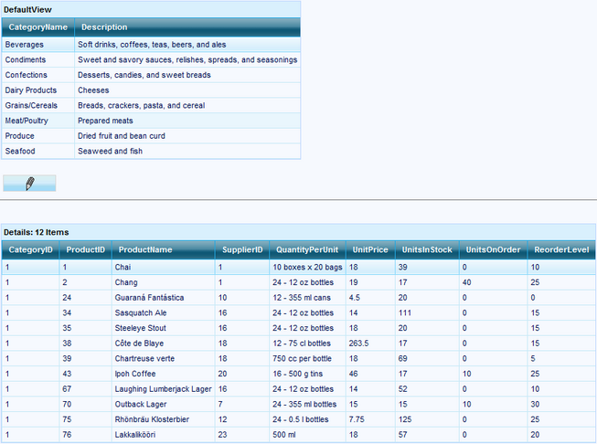

Master-Detail look and feel can be used for linking two tables, Master and their Children.
· Master-Detail is an alternative to the Hierarchical View, where you will see the different tables displayed in different grids.
· In this sample, selecting a Row in Master Grid displays the Related records in the Details Grid.
· When a new row is selected in the Master Grid, a CurrentRecordContextChange event is raised, in whose handler a new FilterCondition is added to the Details Grid, based on the selected record in the Master Grid.
· Editing can also be done, but the changes made while editing a record are not saved in either grid, in this sample.
|
[C#]
private void Page_init(object sender, System.EventArgs e) { this.AccessDataSource1.DataFile = ResolveApplicationDataPath("NWind.MDB"); this.AccessDataSource2.DataFile = ResolveApplicationDataPath("NWind.MDB");
//Add PrimaryKey to the PrimaryKeyColumns collection GridTableDescriptor masterTD = this.MasterGrid.TableDescriptor; masterTD.PrimaryKeyColumns.Add("CategoryID"); this.MasterGrid.DataBind();
GridTableDescriptor detailTD = this.DetailsGrid.TableDescriptor; detailTD.PrimaryKeyColumns.Add("ProductID"); this.DetailsGrid.DataBind();
//these events will be triggered when user Add , delete or update a row in the master grid. this.MasterGrid.DataSourceControlRowDeleting += new GridDataSourceControlRowDeleteEventHandler(this.RowDeleting); this.MasterGrid.DataSourceControlRowAdding += new GridDataSourceControlRowAddingEventHandler(this.RowAdding); this.MasterGrid.DataSourceControlRowUpdating += new GridDataSourceControlRowUpdateEventHandler(this.RowUpdating); //these events will be triggered when user Add , delete or update a row in the details grid this.DetailsGrid.DataSourceControlRowDeleting += new GridDataSourceControlRowDeleteEventHandler(this.RowDeleting); this.DetailsGrid.DataSourceControlRowAdding += new GridDataSourceControlRowAddingEventHandler(this.RowAdding); this.DetailsGrid.DataSourceControlRowUpdating += new GridDataSourceControlRowUpdateEventHandler(this.RowUpdating);
if (this.IsPostBack == false ) { // Set the first record as the current record when the page loads. this.MasterGrid.Table.TopLevelGroup.GetFirstRecord().SetCurrent(); }
}
private void UpdateDetailsGridFilterCondition() { if (this.MasterGrid.Table.CurrentRecord == null) return;
// Get the currently selected record in the master grid int id = (int)this.MasterGrid.Table.CurrentRecord.GetValue("CategoryID"); // Filter the details grid based on the selected record in the master grid. this.DetailsGrid.TableDescriptor.RecordFilters.Clear(); FilterCondition fc = new FilterCondition(FilterCompareOperator.Like, id); RecordFilterDescriptor rfd = new RecordFilterDescriptor(this.DetailsGrid.TableDescriptor.Columns.FindByMappingName("CategoryID").ToString(), FilterLogicalOperator.Or, new Syncfusion.Grouping.FilterCondition[] { fc }); this.DetailsGrid.TableDescriptor.RecordFilters.Add(rfd); }
protected void MasterGrid_CurrentRecordContextChange(object sender, Syncfusion.Grouping.CurrentRecordContextChangeEventArgs e) { UpdateDetailsGridFilterCondition(); detailPanel.Update(); } |
|
[VB.NET]
Private Sub Page_init(ByVal sender As Object, ByVal e As System.EventArgs)
'Add PrimaryKey to the PrimaryKeyColumns collection Dim masterTD As Syncfusion.Web.UI.WebControls.Grid.Grouping.GridTableDescriptor = Me.MasterGrid.TableDescriptor masterTD.PrimaryKeyColumns.Add("CategoryID") Me.MasterGrid.DataBind()
Dim detailTD As Syncfusion.Web.UI.WebControls.Grid.Grouping.GridTableDescriptor = Me.DetailsGrid.TableDescriptor detailTD.PrimaryKeyColumns.Add("ProductID") Me.DetailsGrid.DataBind()
'these events will be triggered when user Add , delete or update a row in the master grid. AddHandler MasterGrid.DataSourceControlRowAdding, AddressOf RowAdding AddHandler MasterGrid.DataSourceControlRowDeleting, AddressOf RowDeleting AddHandler MasterGrid.DataSourceControlRowUpdating, AddressOf RowUpdating 'these events will be triggered when user Add , delete or update a row in the details grid AddHandler DetailsGrid.DataSourceControlRowAdding, AddressOf RowAdding AddHandler DetailsGrid.DataSourceControlRowDeleting, AddressOf RowDeleting AddHandler DetailsGrid.DataSourceControlRowUpdating, AddressOf RowUpdating
If Me.IsPostBack = False Then ' Set the first record as the current record when the page loads. Me.MasterGrid.Table.TopLevelGroup.GetFirstRecord().SetCurrent() End If
End Sub
Private Sub UpdateDetailsGridFilterCondition() If Me.MasterGrid.Table.CurrentRecord Is Nothing Then Return End If
' Get the currently selected record in the master grid Dim id As Integer = CInt(Me.MasterGrid.Table.CurrentRecord.GetValue("CategoryID")) ' Filter the details grid based on the selected record in the master grid. Me.DetailsGrid.TableDescriptor.RecordFilters.Clear() Dim fc As Syncfusion.Grouping.FilterCondition = New Syncfusion.Grouping.FilterCondition(FilterCompareOperator.Like, id) Dim rfd As Syncfusion.Grouping.RecordFilterDescriptor = New Syncfusion.Grouping.RecordFilterDescriptor(Me.DetailsGrid.TableDescriptor.Columns.FindByMappingName("CategoryID").ToString(), FilterLogicalOperator.Or, New Syncfusion.Grouping.FilterCondition() {fc}) Me.DetailsGrid.TableDescriptor.RecordFilters.Add(rfd) End Sub |

Figure 68